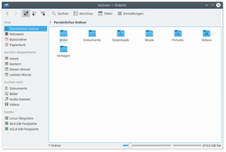
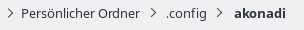
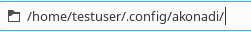
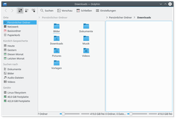
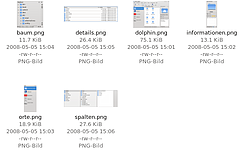
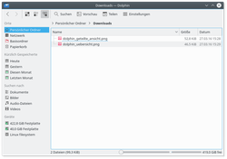
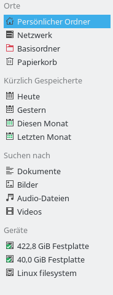
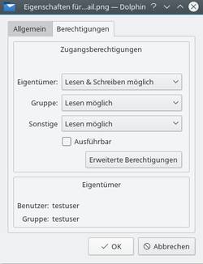

Dolphin
Dieser Artikel wurde für die folgenden Ubuntu-Versionen getestet:
Ubuntu 16.04 Xenial Xerus
Ubuntu 14.04 Trusty Tahr
Zum Verständnis dieses Artikels sind folgende Seiten hilfreich:
Dolphin ist der Dateimanager und ein integraler Bestandteil von KDE. Sogar der Konqueror greift in seiner Dateiverwaltung auf Dolphin zurück. Dolphin ist sozusagen im Gegensatz zum Konqueror ein Spezialist für Dateiverwaltung und wurde speziell im Hinblick auf einfache Benutzbarkeit entwickelt. Da sich die Funktionalität durch die ständige Weiterentwicklung stetig ändert kann es vorkommen, dass einige der hier aufgeführten Funktionen in bestimmten Versionen von Dolphin noch nicht oder nicht mehr verfügbar sind.
Installation¶
Dolphin ist standardmäßig in Kubuntu installiert, kann aber ggf. über folgendes Paket nachinstalliert [1] werden:
dolphin
kde-service-menu-fuseiso (universe, ISO-Abbilder über das Servicemenü ein- / aushängen)
 mit apturl
mit apturl
Paketliste zum Kopieren:
sudo apt-get install dolphin kde-service-menu-fuseiso
sudo aptitude install dolphin kde-service-menu-fuseiso
Starten¶
|  |
| Dolphin |
Da Dolphin als Dateimanager ein elementar wichtiges Programm ist, gibt es auch verschiedene Varianten, ihn zu starten. Über das K-Menü lässt er sich folgendermaßen starten [3]:
"K-Menü -> Programme -> System -> Dateimanager (Dolphin)"
Alternativ kann Dolphin falls die Menü-Variante Kickoff verwendet wird, auch über die Kategorie "Rechner" gestartet werden. Dazu muss nur eine der Verknüpfungen unter "Orte" angeklickt werden und Dolphin wird direkt in dem angewählten Verzeichnis gestartet.
Von einem Terminal aus lässt sich Dolphin in einem vordefinierten Ordner öffnen, z. B.
dolphin /tmp &
(Das "&" bewirkt, dass der Prozess vom öffnenden Terminal gelöst wird.)
Auch über das Menü von Konsole lässt sich Dolphin starten. Dazu kann man "Datei -> Dateimanager öffnen" auswählen und Dolphin wird in demselben Verzeichnis geöffnet, in dem man sich gerade befindet.
Navigationsleiste¶
Dolphin integriert ein neues Konzept um mit der Navigationsleiste schneller und genauer navigieren zu können. Hierzu wird eine sogenannte Brotkrumen-Adressleiste eingesetzt. Anstatt den kompletten Pfad darzustellen wird nur jeder Navigationspunkt beginnend von einem der Orte als Schaltfläche dargestellt. Durch einen Klick auf eine der Schaltflächen kann man direkt in den Ordner gelangen. Somit kann man sehr schnell von einem Unterordner in einen Überordner gelangen.
Zwischen den Schaltflächen, die einen Ordner repräsentieren, befindet sich jeweils ein Pfeil, der wiederum eine Schaltfläche ist. Durch einen Klick auf diesen wird eine Liste aller Unterordner in dem Ordner vor dem Pfeil angezeigt. Somit kann man auch sehr schnell zwischen verschiedenen Unterordnern wechseln.

Es existiert jedoch auch eine klassische Navigationsleiste, bei der der komplette Pfad angezeigt wird. Um zu dieser zu wechseln, kann man entweder "Ansicht -> Navigationsleiste -> Vollständige Adresse anzeigen" auswählen oder das Tastenkürzel Strg + L verwenden. Durch einen Klick rechts neben dem letzten angezeigten Ordner in der Brotkrumen-Darstellung kann man ebenfalls in die klassische Ansicht wechseln. Befindet man sich in der klassischen Ansicht wird rechts neben der Adressleiste ein Pfeil angezeigt, mit dem man wieder in die Brotkrumen-Darstellung wechseln kann. Der Menüpunkt und das Tastenkürzel funktionieren selbstverständlich ebenfalls.

Wie jedes KDE Programm kann auch Dolphin via KIO-Slaves auf viele unterschiedliche Rossourcen, wie zum Beispiel samba-Shares, ftp, ssh, webdav Verzeichnisse zugreifen. Dazu muss im Pfad einfach das entsprechende Protokoll vorangestellt werden. Zum Beispiel "webdavs:/mediacenter.gmx.net" in der Adressleiste öffnet eine verschlüsselte Verbindung zum Mediacenter von GMX, was als WebDAV-Verzeichnis erreichbar ist.
Ansicht teilen¶
|  |
| Geteilte Ansicht |
Dolphin bietet die Möglichkeit, die aktuelle Ordneransicht zu teilen, so dass man zwei Ordneransichten nebeneinander hat, wie man es vom Midnight Commander kennt. Dies ist eine sehr komfortable Ansicht, um Dateien von einem Ordner in einen anderen zu kopieren oder zu verschieben.
Die Teilung kann man über "Ansicht -> Teilen" (Tastenkürzel F3 ) vornehmen. Über "Ansicht -> Schließen" kann man wieder auf eine einzige Ansicht zurückkehren. Hierbei wird über das Symbol angezeigt, welche Ansicht geschlossen wird. Je nachdem welche Ansicht gerade aktiv ist, wird ein Minuszeichen entweder im linken oder im rechten Bereich angezeigt. Generell wird immer die aktive Ansicht geschlossen. Dies ist wichtig zu wissen, wenn man das Tastenkürzel verwendet. Auch in der Werkzeugleiste wird eine Schaltfläche zum Teilen und Schließen der Ansicht angezeigt. Auch hier wird durch ein Minussymbol angezeigt welche Ansicht geschlossen würde.
Selbstverständlich hat jede Ansicht eine eigene Navigationsleiste und jede Ansicht kann einen anderen Ansichtsmodus verwenden.
Unterfenster¶
Außerdem gibt es die Möglichkeit, verschiedene Orte in Unterfensters (auch als Tabs bekannt) zu öffnen.  -Klickt man einen Ordner, so erscheint der Unterpunkt "Im neuen Unterfenster öffnen". Anschließend eröffnet sich ein neues Unterfenster, in dem der entsprechende Ordner geöffnet wurde. Möchte man Dateien von einem Unterfenster zum nächsten Kopieren, so wählt man die gewünschten Dateien aus, zieht diese auf den Reiter des entsprechenden Unterfensters und wartet einen kurzen Moment bis dieser geöffnet wird. Nun kann man die Dateien dort ablegen.
-Klickt man einen Ordner, so erscheint der Unterpunkt "Im neuen Unterfenster öffnen". Anschließend eröffnet sich ein neues Unterfenster, in dem der entsprechende Ordner geöffnet wurde. Möchte man Dateien von einem Unterfenster zum nächsten Kopieren, so wählt man die gewünschten Dateien aus, zieht diese auf den Reiter des entsprechenden Unterfensters und wartet einen kurzen Moment bis dieser geöffnet wird. Nun kann man die Dateien dort ablegen.
Größenregler¶
In jeder Ansicht gibt es einen Schieberegler, mit dem die Größe der angezeigten Elemente verändert werden kann. Die Größe wird, bei entsprechenden Einstellungen in der Konfiguration von Dolphin, in jedem Ordner separat gespeichert. Diese Einstellung kann man in Dolphin unter "Einstellungen -> Dolphin einrichten -> Allgemein -> Größenregler anzeigen" vorgenommen werden.
Anzeige verfügbarer Speicherplatz¶
Am unteren Rand Dolphins gibt es eine Anzeige, wie viel Speicherplatz zurzeit auf der gewählten Partition benutzt wird. Diese Einstellung kann man in Dolphin unter "Einstellungen -> Dolphin einrichten -> Allgemein -> Speicherplatz-Informationen anzeigen" vorgenommen werden.
Ansichtsmodus¶
Dolphin unterstützt drei verschiedene Ansichtsmodi: "Symbole", "Details" und "Spalten". Diese können über das Menü "Ansicht -> Ansichtsmodus" oder über die Tastenkombinationen Strg + 1 (Symbole), Strg + 2 (Details) und Strg + 3 (Spalten) umgeschaltet werden. Zusätzlich gibt es auch in der Werkzeugleiste jeweils eine Schaltfläche, um den Ansichtsmodus zu wechseln. Auch über das Kontextmenü in der Ordneransicht selbst kann der Ansichtsmodus über das Untermenü "Ansichtsmodus" gewechselt werden.
Die Standardansicht in Dolphin ist die Symbolansicht. Wer diese Standardansicht ändern möchte, der kann dies unter "Ansicht -> Ansicht anpassen" tun. Mit der Option "Diese Ansicht-Eigenschaften als Standard verwenden" können die getroffenen Einstellungen als Standard festgelegt werden.
Im folgenden werden die einzelnen Ansichtsmodi genauer beschrieben.
Symbole¶
 Im Ansichtsmodus "Symbole" wird jede Datei und jeder Ordner durch ein Symbol angezeigt. Es ist auch möglich, sich ein Vorschaubild anstatt der Symbole anzeigen zu lassen. Dies kann man im Menü über "Ansicht -> Vorschau" ein- und ausschalten. Alternativ gibt es dafür auch eine Schaltfläche in der Werkzeugleiste. Für die Vorschaubilder existiert eine Größenbeschränkung. Diese lässt sich über "Einstellungen -> Dolphin einrichten -> Ansichten -> Allgemein" im Punkt "Maximale Dateigröße" einstellen. Zusätzlich kann man einstellen, ob ein in die Datei eingebettetes Vorschaubild verwendet werden soll.
Die Dateien in dem aktuell ausgewählten Ordner werden standardmäßig alphabetisch sortiert angezeigt. Die Sortierung kann jedoch über das Menü "Ansicht -> Sortieren nach" umgestellt werden. Hier stehen folgende Sortiermöglichkeiten zur Auswahl:
Name
Größe
Datum
Zugriffsrechten
Eigentümer
Gruppe
Typ
Zusätzlich kann man die Sortierreihenfolge über "Ansicht -> Sortieren nach -> Absteigend" bestimmen.
Es lassen sich auch weitere Informationen zu den Dateien unter den Symbolen anzeigen. Diese können über "Ansicht -> Zusatzinformationen" ein- bzw. ausgeschaltet werden. Hier stehen im Prinzip die gleichen Informationen zur Auswahl nach denen man auch sortieren kann.
Die Symbole lassen sich auch gruppieren, um eine bessere Übersicht zu erhalten. Dies aktiviert man über "Ansicht -> Elemente gruppieren". Nun werden die Symbole in Gruppen aufgeteilt angezeigt und durch eine horizontale Linie getrennt, welche den Namen der Gruppe als Überschrift enthält. Die Gruppierung richtet sich nach der eingestellten Sortierung.
Details¶
|  |
| Detail-Ansicht |
Der Ansichtsmodus "Details" zeigt im Gegensatz zu dem Ansichtsmodus "Symbole" direkt Zusatzinformationen an. Alle Dateien werden in einer Tabelle angezeigt. Über das Kontextmenü des Tabellenkopfs lassen sich weitere Spalten einblenden. Folgende Spalten können angezeigt werden:
Größe
Datum
Berechtigungen
Eigentümer
Gruppe
Typ
Die Spalte "Name" wird immer angezeigt. Durch einen Klick auf einen Spaltenkopf wird die Tabelle nach dieser Spalte sortiert. Durch einen weiteren Klick lässt sich die Sortierrichtung umkehren.
Es besteht auch die Möglichkeit, die Ordner direkt als Baumstruktur anzuzeigen. Dabei wird neben dem Ordner ein Plus angezeigt, welches angeklickt werden kann. Dies expandiert den Ordner und zeigt alle Dateien in diesem Ordner zusätzlich eingerückt in der Tabelle an. Durch einen weiteren Klick auf das nun als Minus dargestellte Symbol, wird die Expansion wieder geschlossen. Selbstverständlich ist die Baumstruktur auf beliebig viele Unterordner anwendbar. Die Baumstruktur ist standardmäßig nicht aktiviert, kann jedoch über "Einstellungen -> Dolphin einrichten -> Ansichten -> Details" durch den Punkt "Aufklappbare Ordner" aktiviert werden.
Seitenleisten¶
Dolphin besitzt mehrere Seitenleisten, die über das Menü "Ansicht -> Seitenleisten" ein- bzw. ausgeblendet werden können. Jede der Seitenleiste kann innerhalb der linken und der rechten Seitenleiste frei platziert werden. Dazu kann man den Kopf anklicken und die Seitenleiste über Drag&Drop verschieben. Es wird dabei farbig angezeigt, wo man die Seitenleiste absetzten würde, wenn man die Maus loslässt. Es ist auch möglich, Seitenleisten übereinander zu platzieren. Dies führt dazu dass die Seitenleisten in Reitern dargestellt werden.
Jede Seitenleiste bietet auch zwei Schaltflächen in ihrem Kopf an. Mit dem linken kann man die Leiste verselbstständigen. D.h. sie wird ein eigenständiges Fenster und "schwebt" über Dolphin. Jedoch bleibt das Fenster im Kontext von Dolphin und kann nicht ohne Dolphin dargestellt werden und auch nicht wie andere Fenster z.B. minimiert werden. Durch einen Klick auf die selbe Schaltfläche wird die Seitenleiste wieder in Dolphin angedockt. Die andere Schaltfläche schließt die Seitenleiste.
Orte¶
|  |
| Seitenleiste |
Dolphin besitzt eine Art Lesezeichen, die sich "Orte" nennen. Diese werden in einer eigenen Seitenleiste angezeigt und können über "Ansicht -> Seitenleisten -> Orte" (Tastenkürzel F9 ) ein- bzw. ausgeblendet werden. Die Orte entsprechen den Orten, die im K-Menü Kickoff in der Kategorie "Rechner" angezeigt werden.
Durch einen Klick auf einen dieser Orte wird dieser natürlich in der aktuellen Ansicht geöffnet. Über das Kontextmenü bietet sich die Möglichkeit, Einträge aus der Liste zu bearbeiten und auch wieder zu entfernen. Außerdem können sie temporär ausgeblendet werden.
Um einen weiteren Eintrag zu den Orten hinzuzufügen, kann man das Kontextmenü eines Verzeichnisses verwenden. Dort gibt es einen Menüpunkt "Zu Orte hinzufügen". Alternativ lässt sich auch ein Verzeichnis über Drag&Drop direkt in der Orte Seitenleiste ablegen.
Zusätzlich gibt es die Rubriken "Kürzlich gespeicherte" und "Suchen nach". Die hier angezeigten Daten werden durch den Indizierungsdienst Baloo ermittelt und erscheinen folglich nur, wenn dieser aktiviert ist.
In den Orten werden automatisch auch Wechselmedien wie USB-Sticks oder CDs angezeigt. Durch ein kleines Steckersymbol wird angedeutet, ob das Medium eingebunden ist. Über das Kontextmenü kann die Einbindung aufgehoben werden.
Die Orte werden als Basis für die "Brotkrumen"-Adressleiste verwendet. So wird jede Adresse in Abhängigkeit zum nächesten übergeordneten Ort dargestellt.
Informationen¶
Über "Ansicht -> Seitenleisten -> Informationen" (Tastenkürzel F11 ) lässt sich eine Informationsseitenleiste anzeigen. Diese zeigt ein Vorschaubild oder ein Symbol, entweder der ausgewählten Datei/Ordner oder der Datei/Ordner, über der sich die Maus befindet. Zusätzlich werden Informationen zu der Datei/Ordner angezeigt, wie Änderungsdatum oder Größe.
In der Informationsleiste gibt es auch die Möglichkeit, Dateien zu bewerten, einen Kommentar zu hinterlegen und der Datei Stichworte zuzuordnen. Dies ist die Schnittstelle zu dem semantischen Desktop Nepomuk  . Dieser bringt die Vorteile des semantischen Webs auf den Desktop.
. Dieser bringt die Vorteile des semantischen Webs auf den Desktop.
Ordner¶
Über "Ansicht -> Seitenleisten -> Ordner" (Tastenkürzel F7 ) kann man eine Ordneransicht mit Baumstruktur ein- bzw. ausblenden. In der Baumstruktur ist es möglich durch + und - Symbole Unterordner ein- bzw. auszublenden. Durch einen Klick auf einen der Ordner wird dessen Inhalt in der aktuellen Ansicht angezeigt.
Terminal¶
Über "Ansicht -> Seitenleisten -> Terminal" (Tastenkürzel F4 ) kann man den Terminal-Emulator Konsole direkt in Dolphin anzeigen. Somit kann man direkt in Dolphin auch Kommandozeilenbefehle eingeben. Konsole öffnet sich direkt in dem Ordner, in dem man sich mit der aktuellen Ansicht befindet.
Dateioperationen¶
Verschieben/Kopieren¶
Dolphin unterstützt natürlich alle von einem Dateimanager erwarteten Funktionen. So können ausgewählte Dateien kopiert, ausgeschnitten und eingefügt werden. Dies kann man entweder über das Kontextmenü oder über das Menü "Bearbeiten" erreichen. Alternativ funktionieren auch die bekannten Tastenkürzel Strg + C , Strg + X und Strg + V . Es ist auch möglich, den Zielordner für das Verschieben oder Kopieren direkt über das Kontextmenü auszuwählen.
Papierkorb/Löschen¶
Über das Kontextmenü einer Datei lässt sich diese auch in den Papierkorb verschieben (Tastenkürzel Entf ) oder direkt löschen (Tastenkürzel ⇧ + Entf ). In beiden Fällen ist die Aktion in einem Dialog zu bestätigen. Jedoch bietet der Dialog die Möglichkeit einzustellen, dass die Rückfrage in Zukunft nicht mehr gestellt wird.
Umbenennen¶
Auch das Umbenennen einer Datei kann man über das Kontextmenü erreichen. Alternativ lässt sich das Tastenkürzel F2 verwenden. Standardmäßig wird zum Umbenennen ein Dialog angezeigt. Es ist aber möglich, diesen Dialog zu deaktivieren und die Umbenennung direkt in der Dolphin-Ansicht vorzunehmen. Dazu öffnet man die Einstellungen über "Einstellungen -> Dolphin einrichten..." und wählt den Reiter "Allgemein". Hier aktiviert man die Option "Direktes umbenennen".
Dolphin unterstützt auch das Umbenennen mehrerer Dateien. Selektiert man mehrere Dateien zum Umbenennen, kann man den neuen mit einem "#" eingeben. Dabei wird das "#" durch eine fortlaufende Nummer ersetzt.
Eigenschaften/Berechtigungen¶
|  |
| Rechteeinstellungen |
Über den Menüpunkt "Eigenschaften" des Kontextmenüs einer Datei (Tastenkürzel Alt + ⏎ ) können weitere Eigenschaften der Datei eingesehen und geändert werden. Im Reiter "Allgemein" werden im Prinzip die gleichen Informationen dargestellt wie in der "Informationen"-Seitenleiste. Es bietet sich jedoch auch die Möglichkeit, die Datei umzubenennen und es lässt sich über eine Schaltfläche neben der Information "Typ" der Konfigurationsdialog öffnen, über den festgelegt werden kann, welche Anwendungen diesem Dateityp zugeordnet sind.
Im Reiter "Berechtigungen" lassen sich die Dateirechte und der Benutzer und die Gruppe, die Eigentümer der Datei sind, anzeigen oder bearbeiten.
Falls die Datei dies unterstützt, existiert ein Reiter "Vorschau", in dem man eine Vorschau der Datei angezeigt bekommt.
Wenn man die Eigenschaften eines Ordners öffnet, so gibt es einen weiteren Reiter "Freigabe", über den die Freigabe des Ordners im lokalen Netz geregelt werden kann.
Falls der Reiter "Freigabe" nicht vorhanden sein sollte, muss noch folgendes Paket nachinstalliert werden:
kdenetwork-filesharing
mit apturl
Paketliste zum Kopieren:
sudo apt-get install kdenetwork-filesharing
sudo aptitude install kdenetwork-filesharing
Versteckte Dateien¶
Versteckte Dateien können über "Ansicht -> Versteckte Dateien anzeigen" (Tastenkürzel Alt + . ) ein- bzw. ausgeblendet werden. Die versteckten Dateien werden passend zu ihrem eigentlichen Dateinamen in die Ansicht einsortiert. Der Punkt zu Beginn des Dateinamens wird somit nicht berücksichtigt.
Suchleiste¶
Mittels Druck auf (Tastenkürzel Strg + F ) kann eine Suchleiste eingeblendet werden. Durch Eingabe von Text wird im jeweilig aktivierten Fenster nach Dateien gesucht werden. Die Rückmeldung erfolgt sofort, da nur Elemente angezeigt werden, die der Suche entsprechen.
Selektieren von Dateien¶
Es gibt neben den bekannten Arten zum Selektieren von Dateien (wie Rahmen ziehen mit der Maus oder Anklicken von Dateien bei gleichzeitigem Drücken der Taste Strg oder ⇧ ] eine vereinfachte Variante. Fährt man mit der Maus über eine Datei, wird ein kleines Plussymbol in der linken oberen Ecke der Datei angezeigt. Durch einen Klick auf dieses Symbol wird die Datei zur Selektion hinzugefügt. Fährt man mit der Maus über eine Datei, die sich bereits in der Selektion befindet, so wird ein Minussymbol angezeigt. Durch einen Klick auf dieses wird die Selektion der Datei wieder aufgehoben.
Verknüpfungen erstellen¶
Verknüpfungen können mit Dolphin über das Kontextmenü " -> Neu erstellen" angelegt werden. Möglich sind nicht nur Links zu Webseiten, sondern auch zu
Programmen
Dateien und Ordnern
Geräten (Partitionen)
FTP-Zugriff auf entfernte Server¶
Wie jede KDE-Anwendung kann auch Dolphin bequem auf einen ftp-Server zugreifen. Die generelle Funktionsweise findet man im Artikel FTP.
Kontextmenü und Servicemenüs¶
Dolphin bietet die Möglichkeit, das Kontextmenü " -> Aktionen" mit weiteren dateispezifischen Aktionen zu erweitern.
Das Servicemenü erscheint in der Regel über " -> Aktionen". Möchte man nicht unter Aktionen, sondern direkt unter einen neuen Eintrag erstellen, dann lässt sich das durch den Eintrag X-KDE-Priority=TopLevel erreichen. Siehe hierzu den Artikel KDE-Servicemenüs.
Links¶
Projektseite
– neue Homepage ab 06/2012Dolphin bei KDE.org
mit HistorieDolphin Handbook
 - auch erreichbar über die Hilfe-Funktion
F1 des Programms
- auch erreichbar über die Hilfe-Funktion
F1 des Programms
- Erstellt mit Inyoka
-
 2004 – 2017 ubuntuusers.de • Einige Rechte vorbehalten
2004 – 2017 ubuntuusers.de • Einige Rechte vorbehalten
Lizenz • Kontakt • Datenschutz • Impressum • Serverstatus -
Serverhousing gespendet von